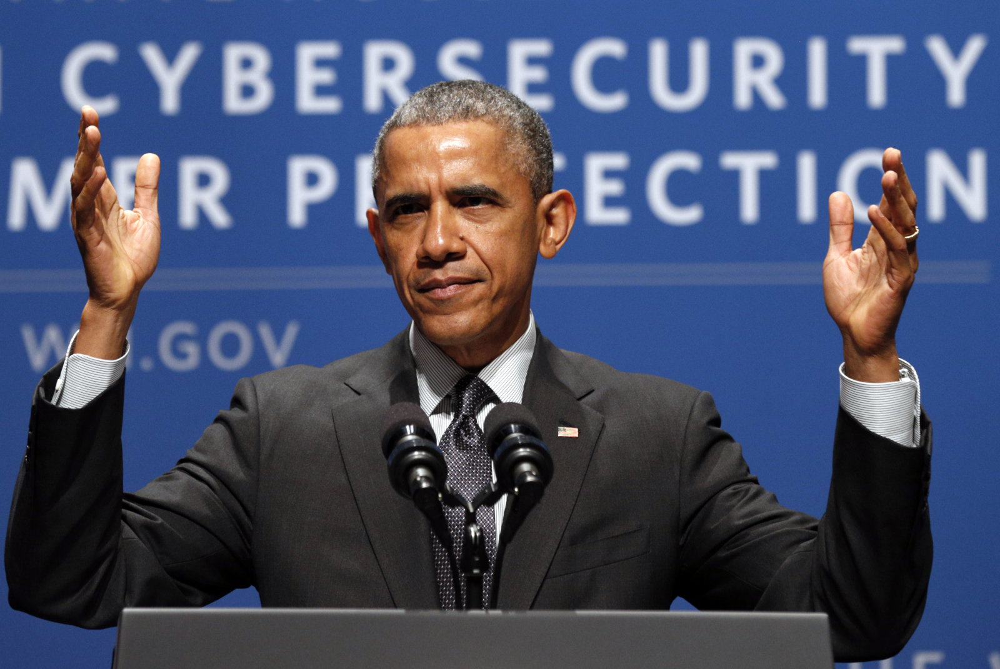
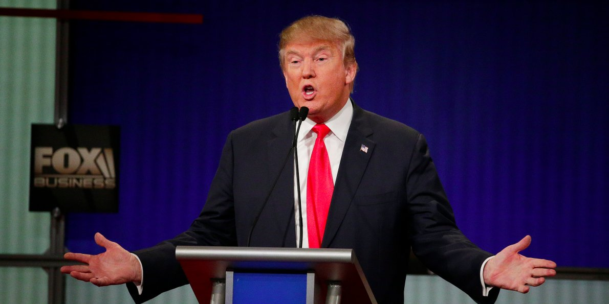

Obama Proposes New Cybersecurity Protocol, But is it too Late? |
| By: Omer Khan | 12/10/16 |
|  |
| This past week, President Obama proposed a massive new proposal that addressed improving national security. This plan addresses issues such as securing Internet of Things (IoT) devices, improved consumer rights, and companies needing to fully secure their products before rushing them to market. The proposal also mentions enhancing the general username/password format generally being used today with things like multifactor, and biometrics. The only issue? Obama has made it clear that this plan would need to be implemented by the next President. So while this plan seems great on paper and much needed, it remains to be seen if President-Elect Trump holds the same viewpoint, and if he doesn't just stop the plan right in its tracks. |
Chinese Officials Warn Trump's Proposed Tariff Could Hurt iPhone Sales |
| By: Omer Khan | 12/10/16 |
|  |
| During the recent election cycle, a lot of media attention was placed on the proposed policies of President-Elect Donald Trump. Over the course of the campaign, he publicized his controversial stances on numerous issues such as climate change, social rights, foreign relations, and a multitude of others. One particular topic Trump was not shy about addressing was the United States’ relationship with China. Trump repeatedly mentioned how the United States has lost jobs and production to firms in China, and vaguely referred to a 45 percent import tariff on all Chinese goods that he wanted to implement. Now that Trump has won the election, the potential ramifications of such an action are now being heavily scrutinized by both U.S and Chinese officials alike. Although there is an ongoing debate of the legality of the proposed action, this hasn’t stopped the discussion from starting. According to Chinese officials, China is prepared to take a “tit-for-tat” approach to Trump’s proposed tariff, meaning they will respond with a tariff of their own. They warn this may significantly hurt iPhone sales in China. |